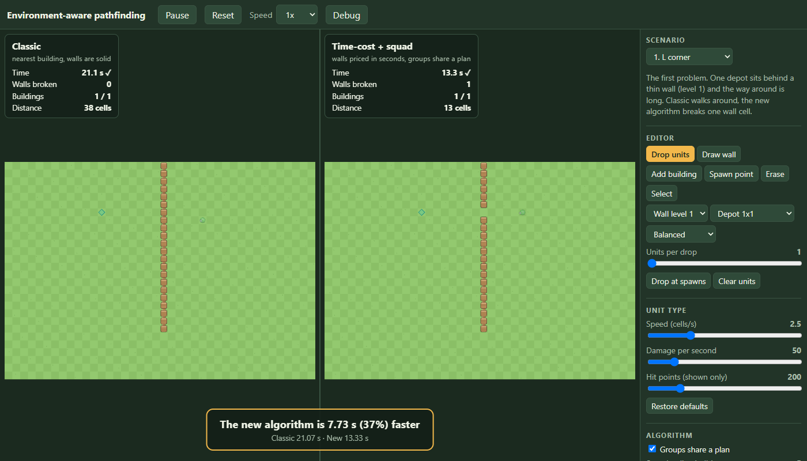
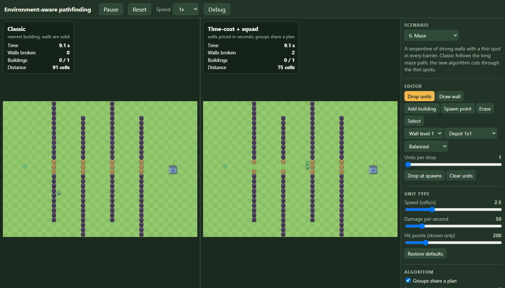
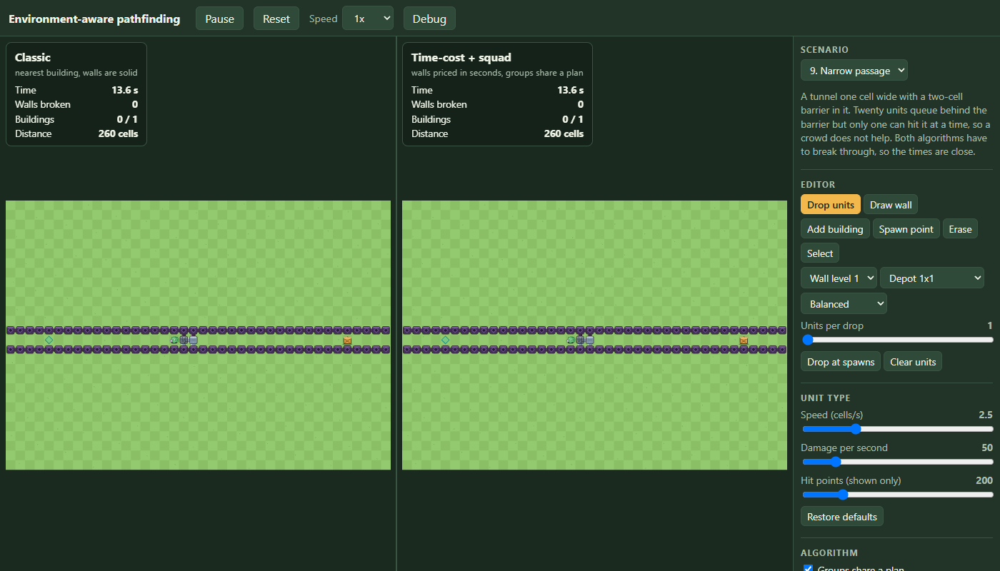
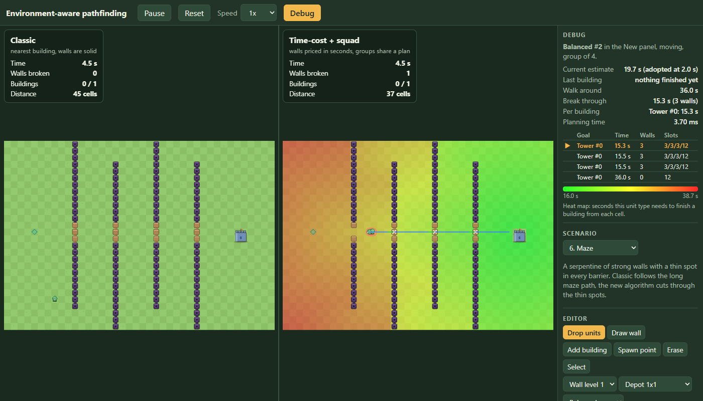
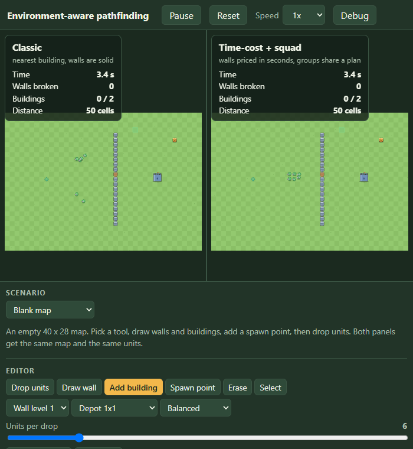

pathfinding part 2: a demo you can break, with an editor, nine maps and a debug view
Part 1 was the algorithm: a simulation, a planner that prices walls in seconds, and squads that share attack positions, checked against the real simulation on 200 random maps. This part is what sits on top of it: a two-panel PixiJS demo with a fixed time step, an editor, nine ready maps, a switch that lets attackers share a cell, a debug view that shows why a unit decided what it did, and a GitHub Pages build. One of the maps found a planner bug the tests had missed.
Try it: live demo · source · part 1: the unit that walked around a wall · part 3: the follow-up list · part 4: a cap, a cache, a lighter editor
Stage 4: making it visible
One canvas, two panels: the classic algorithm on the left, the new one on the right, same map, same units, same deploy events. The drawing code only reads the worlds, and src/sim still imports nothing from Pixi.
The demo: the scenario is the one source, the session runs two worlds in lockstep, the views only read.
The simulation runs on a fixed 1/30 s step. An accumulator turns the browser's variable frame time into whole steps, a speed control (0.5x to 4x) scales it, and a long frame (a background tab) is capped at 0.25 s so it cannot become a burst of steps. The leftover becomes the alpha the view uses to blend each unit between its previous and current position:
advance(realSeconds: number): void {
if (!this.playing) return
this.accumulator += Math.min(realSeconds, MAX_FRAME_SECONDS) * this.speed
while (this.accumulator >= DT && !this.finished) {
for (const listener of this.beforeStep) listener()
this.classic.step()
this.fresh.step()
this.stepCount++
this.accumulator -= DT
}
if (this.finished) this.accumulator = 0
}The acceptance test is not a picture. The same scenario runs once with frames of exactly 1/60 s and once with a mix of 0.2, 0.013, 0.1 and 0.05 s, and every event and statistic of both worlds must match as text, also after Reset. Both pass. In headless Chrome, on the L-corner map (40x28, wall 22 cells long), the left panel walks around in 21.07 s, the right one breaks the wall in 13.33 s, and a banner says the new algorithm is 37% faster.

Stage 5: an editor and nine maps
The map is one Scenario object and both worlds are built from it. Every edit is a small pure function on it, with unit tests: paint a wall of level 1 to 5, erase, place a 1x1, 2x2 or 3x3 building where the whole footprint is free, add a spawn point, change the hit points of one wall or building. Any edit resets both worlds. Sliders cover unit speed, damage and hit points, squad radius, candidate count and a wall hit point multiplier, and a switch turns group behavior off.
export function paintWall(s: Scenario, x: number, y: number, level: WallLevel): boolean {
if (!inside(s, x, y) || marked(s, x, y)) return false
if (occupiedCells(s).get(`${x},${y}`)?.startsWith('building')) return false
// ...add a new wall, or change the level of the one there
}A click drops the same units on the same cell at the same simulated time in both worlds, and the event goes into the scenario's deploy list so Reset replays it. The replay test caught an off-by-one-step bug: I stamped the event with the time of the steps already run, but a world lands a unit only on the next step, so live and replay differed by one step (0.2667 s against 0.2333 s). The event is now stamped (stepCount + 1) * DT.
The nine ready maps, time to destroy every building, from the smoke test that runs each map under both algorithms with one attacker per attack position (the rule of part 1):

The castle and the double layer were not first tries. My first castle, a level 2 ring, had the new algorithm 4.7% behind (21.60 s against 20.63 s). Both broke almost the same wall, and the gap was the greedy building order inside. The first double layer was 1.7% behind for the same reason. I redesigned both so there is a real choice: a strong ring with one weak gate, a strong inner ring with one weak door on the far side. That is what the algorithm is for, but it is also me building a map it wins on. The ties are in the table too: 5 is close, 7 has one unit, 9 forces both through the same barrier. On the crowd map the switch from walking around to breaking happens at 3 units, not 2 as on the test map, because the walk around is shorter relative to the wall; a test pins 1 and 2 walking, 3, 4 and 6 breaking.
The map that found a bug
The first narrow passage was open at both ends, so both algorithms walked around the outside and it looked like a tie. Closing the tunnel across the whole map made the new algorithm 23% slower: 46.93 s against 38.10 s. The estimate was fine (46.8 s predicted). The choice was bad: the debug view showed only two candidates, both through the tunnel's side walls, never through the barrier.

The cause was the first wall price. It counted free cells among all eight neighbors as attack positions. A level 5 side wall has three free cells inside and three outside, so it was priced for six attackers (6.7 s for 2,000 hit points) when only the three on the near side can reach it (13.3 s). The barrier cells were priced correctly at 10 s each, so the wrong walls looked cheaper and the barrier route was never generated. The fix counts only the best single side:
// Free cells on the best side of the cell (west, east, north or south line of three).
for (let d = -1; d <= 1; d++) {
west += free(x - 1, y + d)
east += free(x + 1, y + d)
north += free(x + d, y - 1)
south += free(x + d, y + 1)
}
return Math.max(west, east, north, south)Both algorithms now finish in 38.10 s and every other map kept its exact time. The oracle went from 200 of 200 picks within 5% to 199 of 200 (worst pick 1.052 instead of 1.021), and 199 on both fresh map sets. I relaxed its bound to "at least 198 of 200 within 5%, none more than 10% behind", which the measured numbers support. A correct rule with an honest bound beats a tighter number that only held because of the bug.
A switch: attackers inside each other
In most games of this kind units do not queue for a spot. They stand inside each other and all hit the wall. The one-attacker-per-cell rule had shaped everything since stage 1: attack positions, slot search, waiting, queues. It is now a switch, attackers can share a cell, on by default. In the simulation it is one flag on the world: a troop that reaches its target starts hitting from where it stands, with nothing reserved:
if (this.stackAttackers) {
troop.state = 'attacking' // no position is reserved, everyone hits from where they stand
return
}The planner needed two changes: the rollout adds each unit's damage from its arrival on, with no positions handed out, and the first wall price counts the whole squad's damage. A wall in a one-cell corridor fell in 22.03 s for 8 troops with the rule and falls in 4.53 s without it. The nine maps again:
| map | classic | new | difference | with one attacker per position |
|---|---|---|---|---|
| 1. L corner | 21.07 s | 13.33 s | 37% | 21.07 / 13.33 |
| 2. Castle | 42.90 s | 33.37 s | 22% | 43.30 / 34.50 |
| 3. Double layer | 28.67 s | 21.13 s | 26% | 63.60 / 30.47 |
| 4. Mixed levels | 31.43 s | 26.43 s | 16% | 46.90 / 29.17 |
| 5. No way in | 17.60 s | 16.50 s | 6% | 20.37 / 19.73 |
| 6. Maze | 47.13 s | 17.80 s | 62% | 47.33 / 20.13 |
| 7. Crowd effect (1 unit) | 21.07 s | 21.07 s | same | 21.07 / 21.07 |
| 8. Reinforcements | 16.17 s | 10.83 s | 33% | 17.00 / 14.63 |
| 9. Narrow passage | 13.40 s | 13.40 s | same | 38.10 / 38.10 |
The new algorithm still wins or ties everywhere, so part 1's result does not depend on the rule. Its lead moves: the double layer drops from 52% to 26%, because classic's slow break through the strong ring is much faster with the whole crowd hitting; reinforcements grows from 14% to 33%, because late arrivals add damage the moment they arrive. The planner is also more accurate with the rule off, since there is nothing to guess about who stands where. The part 1 oracle in both settings:
| setting | maps within 5% of the best plan | worst pick | mean estimate error |
|---|---|---|---|
| one attacker per position, test maps | 199 of 200 | 1.052 | 1.2% |
| one attacker per position, two fresh sets | 199 and 199 | 1.146, 1.107 | 1.2%, 1.1% |
| cells shared, test maps | 200 of 200 | 1.000 | 0.8% |
| cells shared, two fresh sets | 200 and 200 | 1.000, 1.004 | 0.8%, 0.8% |
The slot-rule tests from parts 1 and 2 now switch the rule off explicitly. New tests cover the default, the corridor wall (4.53 s against 22.03 s), no waiting or reserving, determinism, and the demo switch rebuilding both worlds. The suite is 123 tests.
Stage 6: cartoon style and a debug view
Everything is drawn in code, no image files: wall posts that join their neighbors, five wall levels (wood, stone, iron, gold, obsidian), cracks at 75%, 50% and 25% hit points, three round characters that hop, squash and lunge. Hits throw sparks and falling walls throw dust. Particles live in a fixed pool of typed arrays capped at 360, with their own random generator, so decoration cannot touch the simulation.
The debug view follows the first active unit (or a clicked one) and shows, with no extra clicking:
- A heat map of the flow field for that unit type, in seconds to finish.
- Its route: blue where it walks, green where it breaks, an X on the wall.
- Rings around units that share a plan, and the squad radius around the followed one.
- Wall hit point bars, and a table of walls per level.
- The squad's candidates: goal, estimated time, walls, attack positions per stage, and the one in use.
- Best walk-around time against best break-through time, estimate against the real time, and the planning time of the last decision.

Two bugs on the way. The candidate list showed "never" for a group already hitting, because asking the planner while units hold the positions answers a different question (the same effect as in the oracle). A group that has started hitting now shows that it keeps its plan. And the heat map (a thousand squares) was repainted every frame; it now repaints only when the field changes, at most twice a second. Candidates come from a private planner per panel, so asking never disturbs the one that runs the world.
Frame time
The goal was close to 60 fps with 30 units in both panels. Measured in headless Chrome with software WebGL, 1400x800:
| version | time per frame | frames per second | JavaScript in the frame |
|---|---|---|---|
| stage 4, plain shapes | 21.3 ms | 47 | not measured |
| stage 6, cartoon style, debug off | 19.5 ms | 51 | 0.6 ms |
| stage 6, debug on | 26.1 ms | 38 | 0.9 ms |
My code (simulation steps and draw calls) is under 1 ms. The rest is the software rasterizer filling pixels. A real GPU should do much better, but I did not measure one, so I cannot claim 60 fps. Walls redraw only when one falls, and cracks only for hurt walls.
Publishing
The build uses relative asset paths so it works from any sub-path. A GitHub Actions workflow runs npm ci, the tests and the build on every push to main and publishes to Pages; a failing test stops the publish. The production build is checked locally in Chrome, including a 700 px window where nothing overflows sideways.

Still open
- Building order inside a target area is still greedy.
- A full planning round for ten squads takes about 25 ms against a 3 ms goal.
- Attack positions for walls in a row treat earlier walls as gone and cannot know what other squads will occupy.